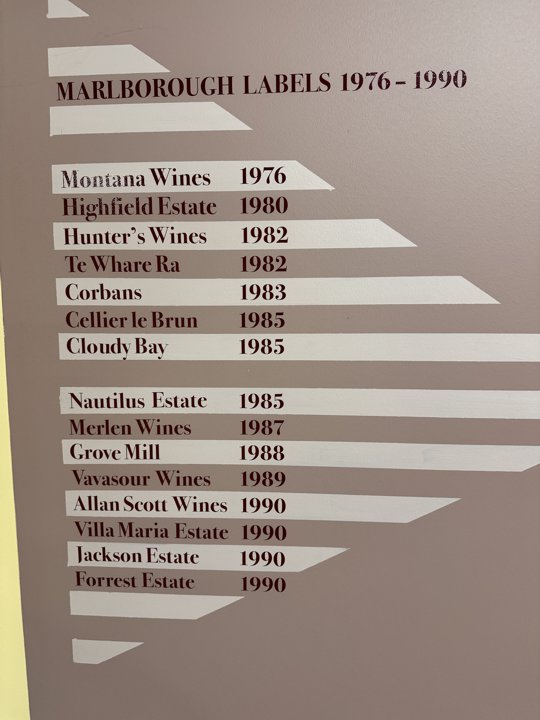
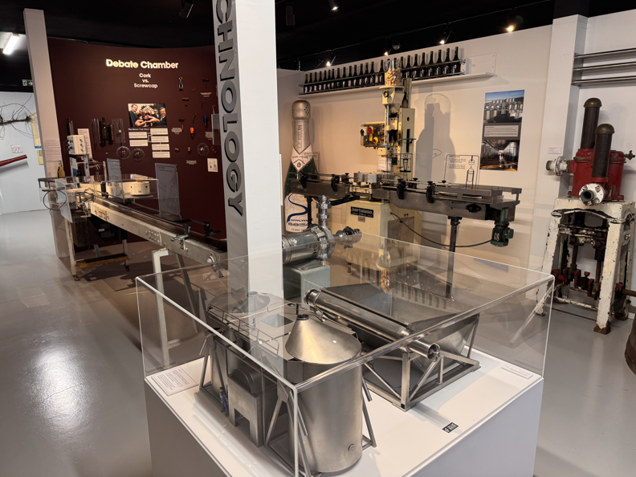
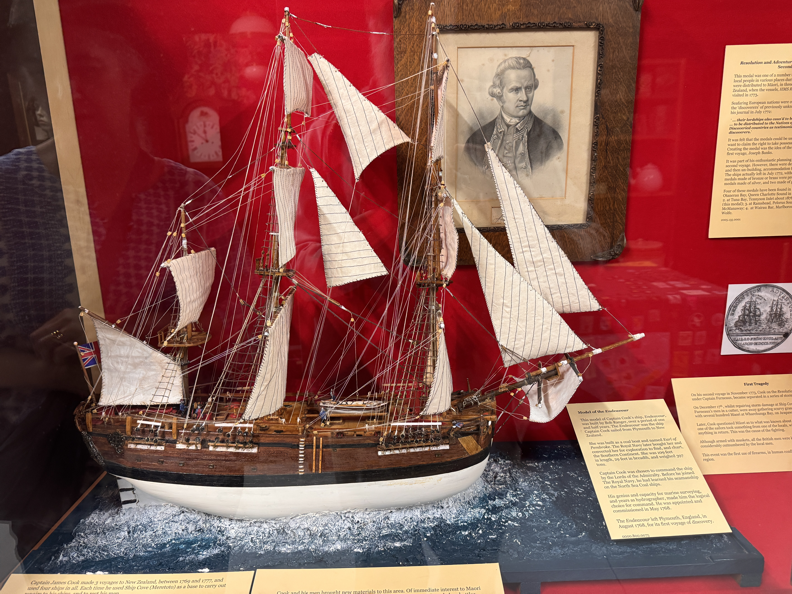
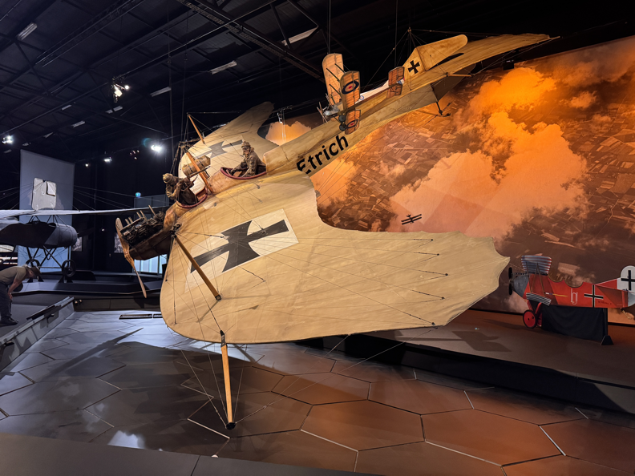
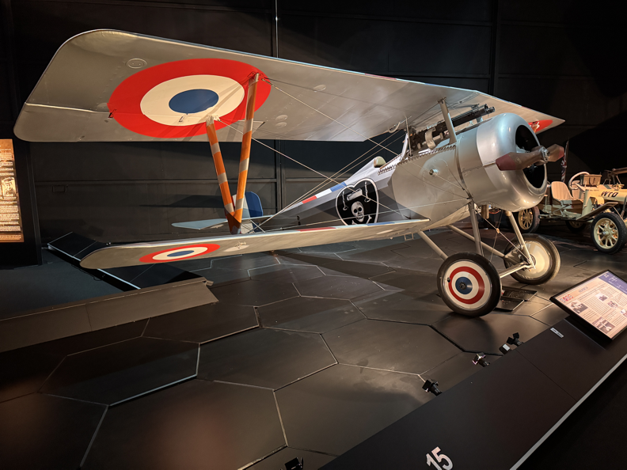
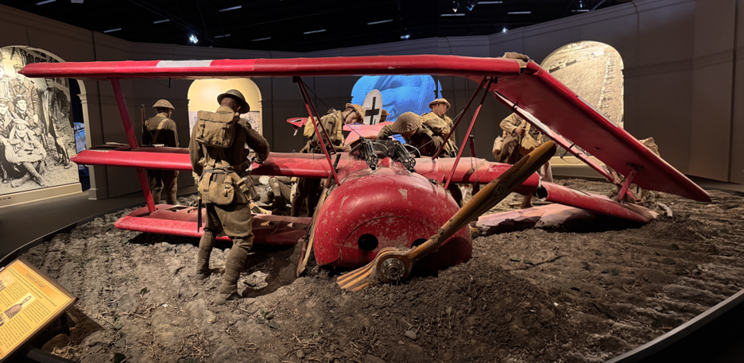
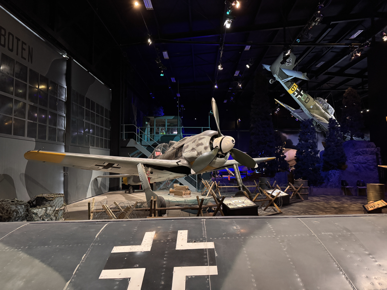
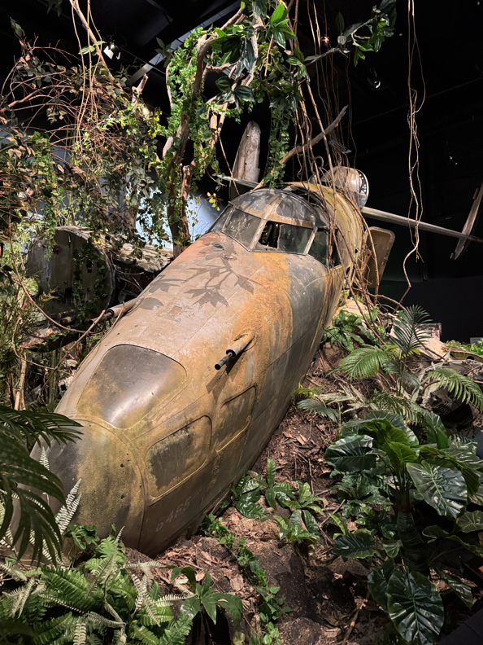
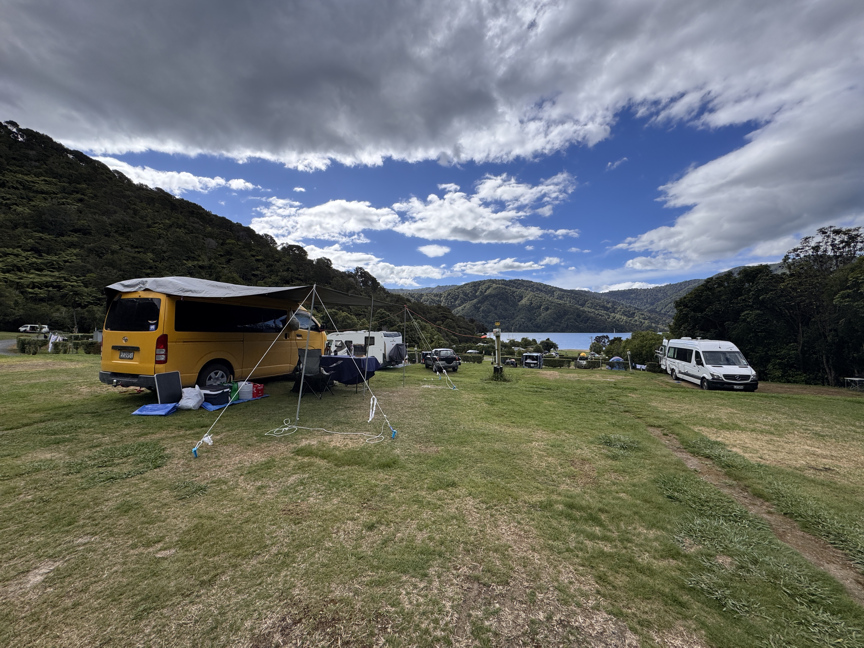

from Nelson through to Havelock and Renwich/Blenheim, South Island,
then Picton to catch the ferry back to Wellingdon, North Island, New Zealand!
We visited Pelorus Bridge and River.
Went to the Marlborough Museum - mostly about wine in the region and some earlier history. A good educational advert for local wine.


Colonial History:

We visited the Omaka Aviation History Museum in Blenheim.
They're quite nice WWI and WW2 (separate entries/fees) museums! WETA did a lot of the sculpture/art in the museum!
WWI


The Looting of the Red Baron's crash & death.

WWII
Lots of information, but a tad tight and dark.


We found out our ferry and the ferries the next day (Sunday and Monday) were canceled due to heavy swells predicted between the islands,
which threw quite a wrench in the plans. We booked the next available ferry crossing with openings 10 days later, so now what to do between?
We booked the 10 days out ferry and were advised to check back after a few days (for the backlog to settle). We camped at a beautiful RV park
for 3 nights, and came in the the ferry 5 days later than originally planned, and were allowed to cross!
